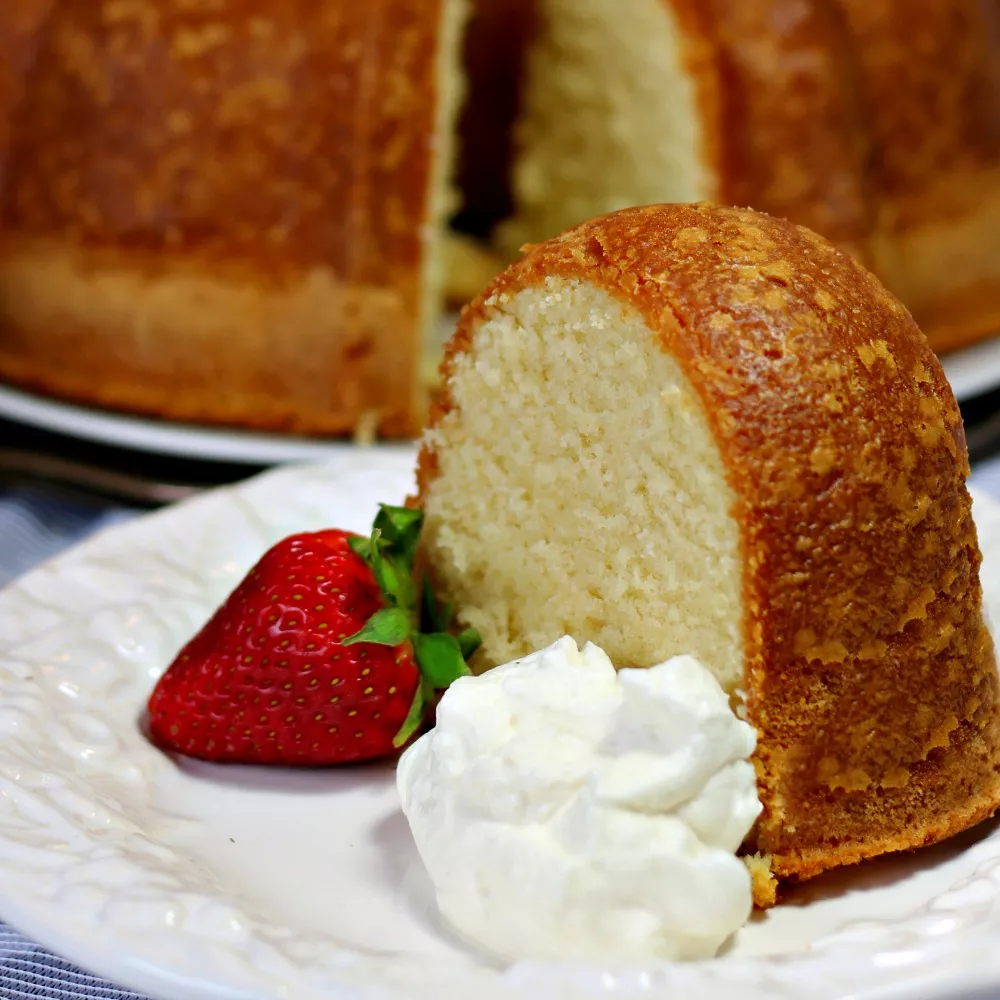

Description
This homemade pound cake recipe is buttery and rich with the flavor of
shortbread cookies but still tender and light as a feather.
Ingredients
- 3 ¼ cups white sugar
- ¾ pound unsalted butter, at room temperature
- 6 extra large eggs, at room temperature
- 2 teaspoons pure vanilla extract
- 3 cups all-purpose flour
- ½ teaspoon baking powder
- ½ teaspoon salt
- ¼ teaspoon ground nutmeg
- 1 cup 1% milk
Steps
-
Preheat the oven to 325 degrees F (165 degrees C). Grease and flour a
12-cup fluted tube pan (such as Bundt).
-
Cream sugar and butter in a large mixing bowl on medium speed until
light and fluffy, about 5 minutes. Add eggs, one at a time, beating for
45 seconds after each addition. Add vanilla extract and beat for 30
seconds.
-
Combine flour, baking powder, salt, and nutmeg in a medium bowl. Add 1/2
of the flour mixture to the butter mixture and mix on low speed until
just blended. Add 1/2 cup milk and beat on low speed until just blended.
Scrape the sides of the bowl with a spatula between each addition.
Repeat with remaining flour mixture and milk.
-
Pour batter into the prepared baking pan, filling no more than 2/3 full.
Smooth the top with a spoon or a spatula.
-
Bake in the preheated oven until a toothpick inserted into the center
comes out clean and the cake is just starting to pull away from the
sides of the pan, about 1 hour and 25 minutes.
-
Remove from the oven and allow to cool for about 15 minutes before
inverting onto a plate. Allow to cool completely before serving.